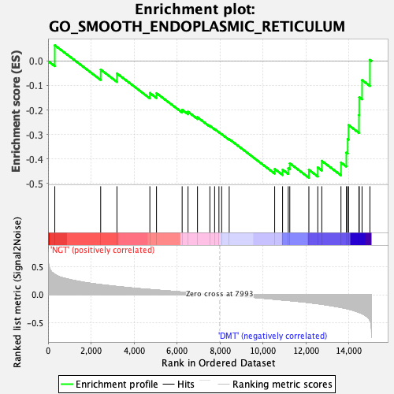
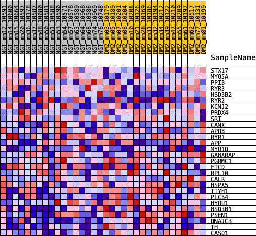
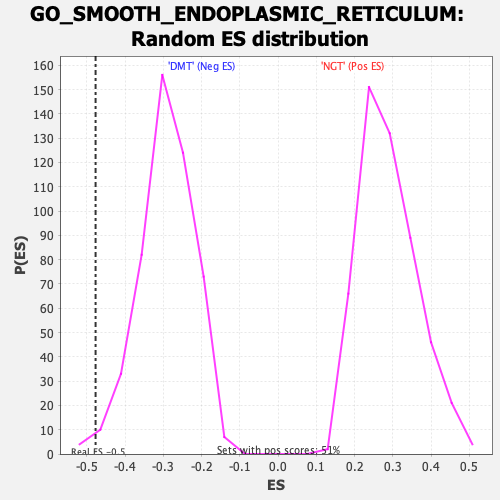

| | | Dataset | Diabetes_collapsed_symbols.Diabetes.cls#NGT_versus_DMT |
| Phenotype | Diabetes.cls#NGT_versus_DMT |
| Upregulated in class | DMT |
| GeneSet | GO_SMOOTH_ENDOPLASMIC_RETICULUM |
| Enrichment Score (ES) | -0.4775231 |
| Normalized Enrichment Score (NES) | -1.6283423 |
| Nominal p-value | 0.014314928 |
| FDR q-value | 1.0 |
| FWER p-Value | 0.999 |
Table: GSEA Results Summary

Fig 1: Enrichment plot: GO_SMOOTH_ENDOPLASMIC_RETICULUM
Profile of the Running ES Score & Positions of GeneSet Members on the Rank Ordered List
| PROBE | DESCRIPTION
(from dataset) | GENE SYMBOL | GENE_TITLE | RANK IN GENE LIST | RANK METRIC SCORE | RUNNING ES | CORE ENRICHMENT | | 1 | STX17 | na | | | 313 | 0.365 | 0.0646 | No |
| 2 | MYO5A | na | | | 2449 | 0.181 | -0.0351 | No |
| 3 | PPIB | na | | | 3206 | 0.148 | -0.0508 | No |
| 4 | RYR3 | na | | | 4738 | 0.094 | -0.1307 | No |
| 5 | HSD3B2 | na | | | 5047 | 0.085 | -0.1313 | No |
| 6 | RYR2 | na | | | 6241 | 0.049 | -0.1993 | No |
| 7 | KCNJ2 | na | | | 6514 | 0.041 | -0.2077 | No |
| 8 | PRDX4 | na | | | 6955 | 0.029 | -0.2302 | No |
| 9 | SRI | na | | | 7531 | 0.013 | -0.2654 | No |
| 10 | CANX | na | | | 7752 | 0.007 | -0.2784 | No |
| 11 | APOB | na | | | 7953 | 0.001 | -0.2915 | No |
| 12 | RYR1 | na | | | 8079 | -0.003 | -0.2992 | No |
| 13 | APP | na | | | 8431 | -0.013 | -0.3195 | No |
| 14 | MYO1D | na | | | 10547 | -0.080 | -0.4416 | No |
| 15 | GABARAP | na | | | 10915 | -0.093 | -0.4443 | No |
| 16 | PGRMC1 | na | | | 11180 | -0.102 | -0.4382 | No |
| 17 | FTCD | na | | | 11251 | -0.104 | -0.4185 | No |
| 18 | RPL10 | na | | | 12139 | -0.139 | -0.4450 | Yes |
| 19 | CALR | na | | | 12554 | -0.159 | -0.4354 | Yes |
| 20 | HSPA5 | na | | | 12740 | -0.169 | -0.4083 | Yes |
| 21 | TTYH1 | na | | | 13633 | -0.225 | -0.4151 | Yes |
| 22 | PLCB4 | na | | | 13883 | -0.245 | -0.3743 | Yes |
| 23 | HYOU1 | na | | | 13947 | -0.253 | -0.3193 | Yes |
| 24 | HSD3B1 | na | | | 13984 | -0.256 | -0.2619 | Yes |
| 25 | PSEN1 | na | | | 14471 | -0.314 | -0.2208 | Yes |
| 26 | DNAJC3 | na | | | 14483 | -0.315 | -0.1478 | Yes |
| 27 | TH | na | | | 14615 | -0.337 | -0.0778 | Yes |
| 28 | CASQ1 | na | | | 14981 | -0.458 | 0.0049 | Yes |
Table: GSEA details [plain text format]

Fig 2: GO_SMOOTH_ENDOPLASMIC_RETICULUM
Blue-Pink O' Gram in the Space of the Analyzed GeneSet

Fig 3: GO_SMOOTH_ENDOPLASMIC_RETICULUM: Random ES distribution
Gene set null distribution of ES for GO_SMOOTH_ENDOPLASMIC_RETICULUM